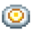
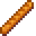
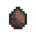
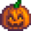
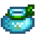

Freundschaft
Du kannst mit den Dorfbewohnern von Pelikan Stadt Freunde werden. Während eure Freundschaften sich vertiefen, werden die Dialoge der Dorfbewohner freundlicher, Zwischensequenzen, genannt Herzevents, werden stattfinden und die Dorfbewohner werden dir Geschenke mit der Post schicken.
Freundschaft Funktionsweise
Punkte System
Jeder Dorfbewohner hat eine Freundepunktzahl präsentiert durch ein zehn-Herz Meter (für einen normalen Dorfbewohner) oder vierzehn-Herz Meter (für deinen Ehepartner):
Jedes Herz stellt 250 Freundschaftspunkte dar. Du kannst deine Beziehungen in der Sozialtabelle im Spielmenü sehen.
Du kannst Freundschaftspunkte erhöhen durch:
- Reden mit den Dorfbewohnern (+10 wenn der Dorfbewohner in der Mitte von einer speziellen Animation ist, wie Trainieren oder das benutzen einer Kamera, sonst +20; kann nur einmal am Tag gepunktet werden);
- Erledigen einer Lieferaufgabe für sie (+150);
- das Geben von einem Geschenk, welches sie mögen (siehe Geschenke);
- Auswählen einer bestimmten Entscheidung in ihren Herzevents.
Du kannst Freunschaftspunkte verlieren durch:
- nicht reden mit einem Dorfbewohner (-2/Tag);
- das Geben eines Geschenks, welches sie nicht mögen (siehe Geschenke);
- Treffen mit der Schleuder;
- Durchwühlen einer Mülltonne wenn jemand in der Nähe ist (-25, außer Linus den das nicht stört).
Wenn das Herz-Meter eines Dorfbewohners voll ist, wird es mit der Zeit nicht mehr sinken, selbst wenn du nicht mehr mit ihnen redest (wenn ein NPC erobert werden kann und du diesem noch keinen Blumenstrauß gegeben hast, wird das Herz Meter bei acht Herzen als voll angesehen.). Es kann noch runtergehen über andere Möglichkeiten (z. B. Geben eines schlechten Geschenks).
Wenn ein Dorfbewohner zwei Herzen hat, kann man dessen Raum betreten.
Geschenke
Du kannst jedem Dorfbewohner zwei Geschenke pro Woche geben (eins pro Tag), angegeben durch die Kontrollkästen in der Sozialtabelle. Du kannst ihnen immer ein Geschenk an deren Geburtstag geben, selbst wenn du ihnen schon zwei Geschenke in der Woche gegeben hast. Nach der Hochzeit, kann man seinem Ehepartner jeden Tag in der Woche ein Geschenk geben.
Jeder Bewohner hat individuelle Vorlieben und Abneigungen, welche beeinflussen, wie viele Freundschaftspunkte gewonnen werden wenn man ein Geschenk gibt. Die Freundschaftspunkte werden am Geburtstag (×8) und am Wichteln (×5) multipliziert:
| Geschenk Geschmack | Normal | Wichteln (×5) | Geburtstag (×8) |
|---|---|---|---|
| Liebt | +80 | +400 | +640 |
| Mag | +45 | +225 | +360 |
| Neutral | +20 | +100 | +160 |
| Mag nicht | -20 | -100 | -160 |
| Hasst | -40 | -200 | -320 |
Wenn ein Geschenkt gemocht oder geliebt ist, werden die errungenen Punkte durch die Qualität des Gegenstandes weiter beeinflusst.
| Qualität | Multiplikator | |
|---|---|---|
| Normal | +0% | |
| Silber | +10% | |
| Gold | +25% | |
| Iridium | +50% |
Herzevents
Gewinnen von Freundschaft mit jedem Dorfbewohner entsperrt einzigartige Events (schau den Artikel jedes Dorfbewohners nach für die Anforderungen). Es ist möglich, manche Events für immer zu verpassen, obwohl die meisten Events immer angeschaut werden können oder nicht in der richtigen Reihenfolge.
Romanze
- Hauptartikel: Ehe
Manche Dorfbewohner können durch die Spieler erobert werden (siehe Ehekandidaten). Sobald du mit einem heiratbaren Dorfbewohner acht Herzen erreicht hast, kannst du diesem einen Blumenstrauß geben, um das neunte und zehnte Herz freizuschalten. Bevor du heiratest kannst du ohne Auswirkungen mehreren Dorfbewohnern einen Blumenstrauß geben. Nach der Hochzeit allerdings leidet die Beziehung zum Ehepartner darunter und einige Freundschaftspunkte gehen verloren. Sind zehn Herzen mit einem heiratbaren Dorfbewohner erreicht, kann dieser Person ein Meerjungfrauen-Amulett überreicht und damit ein Heiratsantrag gemacht werden.
Hast du einen Dorfbewohner geheiratet, erhält diese Person eine erweiterte Anzeige über 12 Herzen. Durch Erfüllen eines 13. versteckten Herzens erhältst du eine Sternenfall-Frucht.
Feste
- Hauptartikel: Feste
Drei Feste können die Freundschaftspunkte beeinflussen:
- Der Blumentanz erhöht die Freundschaftspunkte mit deinem Tanzpartner.
- Das Luau erhöht oder verringert die Freundschaftspunke mit allen Dorfbewohnern (außer Sandy, dem Zauberer, Krobus und dem Zwerg).
- Dein Geschenk am Fest des Wintersterns hat einen fünffachen Wert der normalen Freundschaftspunkte.
Allgemeine Geschenke
- Siehe auch: Liste aller Geschenke
Unten sind Listen von Gegenständen welche allgemein geliebt, gemocht, neutral angesehen, ungeliebt oder gehasst sind. Beachte, dass es manche Ausnahmen gibt und dass die Dorfbewohner individuelle Geschmäcker haben, welche dem allgemeinen Geschmack gegenüber vorrangig sind.
Vorzüge für Eier, Milch, Früchte, und die meisten Sammelbaren Gegenstände variieren bei Dorfbewohner, und sind generell nicht gelistet.
Allgemein Geliebtes
Dies ist eine Liste von Gegenständen, die jeder Dorfbewohner unbedingt liebt als Geschenk zu erhalten. Diese Gegenstände haben eine Garantie dir die meisten Punkte (80) zu geben für eure Beziehung, aber es mag schwer sein, diese zu erhalten.
| Bild | Name | Beschreibung | Quelle |
|---|---|---|---|
| Perle | Ein seltener Schatz aus dem Meer. | Nachtmarkt | |
| Goldener Kürbis | Er ist wertvoll, hat aber sonst keinen Nutzen | Geisternacht | |
| Prismatische Scherbe | Eine sehr seltene und mächtige Substanz unbekannter Herkunft. | Bergbau | |
| Hasenpfote | Manche sagen, sie bringe Glück. | Tiere | |
| Magischer Bonbon | Ein seltenes und kraftvolles Bonbon, das mit der Essenz des prismatischen Splitters angereichert ist. |
|
Allgemein Geliebtes Ausnahmen
- Haley hasst Prismatische Scherbe.
- Penny hasst Hasenpfote.
Allgemeine Vorlieben
Obwohl sie weniger Freundschaftspunkte wert sind als ein geliebtes Geschenk, erhöht ein gemochtes Geschenk die Freundschaft um 45 Punkte, diese sind meist leichter zu erhalten.
- Alle Handwerkswaren (Außer Öl welches nicht gemocht ist, und Schattenmayonnaise welche gehasst wird)
- Alles Gekochte (Außer Spiegelei und Brot, welche allgemein Neutral sind und Komisches Brötchen welches gehasst wird)
- Alle Blumen (Außer Mohn welches gehasst wird)
- Alle sammelbaren Mineralien (Außer Quarz welches bei jedem Dorfbewohner variiert)
- Jedes Obst von Obstbäumen
- Alle Edelsteine (Außer Prismatische Scherbe welche geliebt ist außer von Haley)
- Jedes Gemüse Straußfarn inbegriffen (Außer Weizen und Hopfen welche allgemein Neutral sind)
| Bild | Name | Beschreibung | Quelle |
|---|---|---|---|
| Lebenselixier | Stellt Gesundheit vollständig wieder her. | Herstellung | |
| Ahornsirup | Ein süßer Sirup mit einem einzigartigen Geschmack. | Zapfhahn | |
| Piña Colada | Getränk in Maßen genießen. | Ingwerinsel |
Allgemein Gemochtes Ausnahmen
Unten ist eine ausklappbare Tabelle von Allgemein Gemochtes Ausnahmen, gelistet bei Dorfbewohner. (Schau auch: Liste aller Geschenke)
Allgemein Neutrales
Dies ist eine Liste von Gegenständen, welche neutrale Reaktionen bei den Dorfbewohnern hervorrufen und 20 Freundschaftspunkte geben. Es gibt Ausnahmen.
| Bild | Name | Beschreibung | Quelle | Zutaten |
|---|---|---|---|---|
| Entenfeder | Schau dir die Farben an. | Enten | ||
| Wolle | Weiche, flauschige Wolle. | Schafe | ||
| Trüffel | Ein Gourmetpilz mit einem einzigartigen Geschmack. | Schweine | ||
| Süße Edelsteinbeere | Mit Abstand das Süßeste, das du je gerochen hast. | Landwirtschaft | ||
|  | Spiegelei | Leicht angebraten. | Kochen | |
|  | Brot | Ein knuspriges Baguette. | Kochen | |
| Weizen | Eine der meistangebauten Getreidesorten. Bietet großartiges Mehl für Brote oder Kuchen. | Landwirtschaft | ||
| Hopfen | Eine bittere, würzige Blume, die Bier seinen Geschmack verleiht. | Landwirtschaft | ||
| Venusmuschel | Einst hat hier jemand gelebt. | Sammeln | ||
| Koralle | Eine Kolonie aus winzigen Kreaturen, die in ihrem Zusammenschluss wunderschöne Strukturen formen. | Sammeln | ||
| Nautilusmuschel | Eine sehr alte Muschelschale. | Sammeln | ||
| Regenbogenmuschel | Eine wunderschöne Muschelschale. | Sammeln |
Allgemeine Neutrale Ausnahmen
- Elliott liebt Entenfeder.
- Emily liebt Wolle.
- Evelyn hasst Venusmuschel und Koralle.
- Harvey mag Entenfeder, mag kein Brot, hasst Koralle, Nautilusmuschel, und Regenbogenmuschel.
- Leah liebt Trüffel, mag kein Spiegelei, hasst Brot.
- Maru hasst Trüffel.
- Penny mag keine Entenfeder und Wolle, hasst Hopfen.
- Sandy mag Wolle.
Allgemeine Abneigungen
Dies ist eine Liste mit Gegenständen, welche die Freundschaft um 20 Punkte verringert, wenn man diese als Geschenk gibt.
- Alle Baumaterialien -- Batterien, Lehm, Fasern, Hartholz, Stein und Holz
- Alle Bomben
- Alle hergestellten Böden & Wegen
- Alle Zäune
- Alle Dünger
- Alle Fische (außer Venusmuschel welches allgemein Neutral ist, sowie Karpfen & Schnecken welche allgemein gehasst sind.)
- Alle Geoden Mineralien
- Alle Geoden
- Jede Saat einschließlich aller Obstbaum-Setzlinge, Eicheln, Ahornsamen und Kiefernzapfen
- Alle Sprinkler
- Alle Angelgeräte
- Die meisten Metallwaren -- Kohle, Kupferbarren, Goldbarren, Golderz, Iridiumbarren, Iridiumerz, Eisenbarren und Verfeinerter Quarz
| Bild | Name | Beschreibung | Quelle |
|---|---|---|---|
| Höhlenkarotte | Ein stärkehaltiger Snack, den man in Höhlen findet. Hilft Minenarbeitern, länger zu arbeiten. | Sammeln im Bergbau | |
| Treibholz | Ein Stück Holz aus dem Meer. | Fischen & Krabbenreusen sowie Mülleimer | |
| Weizenmehl | Eine beliebte Kochzutat, die aus zermahlenen Weizenkörnern hergestellt wird. | Pierres Gemischtwarenladen | |
| Öl | Allzweck-Kochöl. | Pierres Gemischtwarenladen | |
|  | Schattenei | Ein tiefschwarzes Ei mit roten Flecken. Es fühlt sich warm an. | Tiere |
| Essig | Eine gereifte und fermentierte Flüssigkeit, die in vielen Rezepten Anwendung findet. | Pierres Gemischtwarenladen | |
| Reis | Standardgetreide, das oft mit Gemüse serviert wird. | Pierres Gemischtwarenladen | |
| Eichenharz | Eine klebrige, duftende Substanz, die aus Eichensaft gewonnen wird. | Zapfhahn | |
| Kiefernteer | Eine penetrante Substanz, die aus Kiefernsaft gewonnen wird. | Zapfhahn | |
| Solar-Essenz | Die leuchtende Oberfläche fühlt sich warm an. | Bergbau | |
| Schattenessenz | Bebt vor dunkler Energie. | Bergbau | |
| Frühlingszwiebel | Wachsen im Frühling in der Wildnis. | Sammeln | |
| Müsliriegel | Ein schneller Snack, um den hungrigen Sammler voranzutreiben. | Herstellung | |
|  | Kürbislaterne | Eine skurrile Herbstdekoration. | Herstellung |
| Teegeschirr | Feines Porzellan. | Mögliches Geschenk am Fest des Wintersterns |
Allgemeine Abneigungen Ausnahmen
 Abigail liebt Kugelfisch; hasst Lehm
Abigail liebt Kugelfisch; hasst Lehm Clint liebt Goldbarren, Iridiumbarren, Omni-Geode; mag Kupferbarren, Eisenbarren; ist neutral gegenüber Kohle, Golderz, Iridiumerz, Verfeinerter Quarz
Clint liebt Goldbarren, Iridiumbarren, Omni-Geode; mag Kupferbarren, Eisenbarren; ist neutral gegenüber Kohle, Golderz, Iridiumerz, Verfeinerter Quarz Demetrius ist neutral gegenüber jeden Fisch (außer Karpfen & Schnecke)
Demetrius ist neutral gegenüber jeden Fisch (außer Karpfen & Schnecke) Zwerg liebt Omni-Geode; ist neutral gegenüber Solar-Essenz, Schattenessenz
Zwerg liebt Omni-Geode; ist neutral gegenüber Solar-Essenz, Schattenessenz Elliott liebt Hummer; mag Oktopus, Tintenfisch; ist neutral gegenüber jeden anderen Fisch (außer Karpfen & Schnecke); hasst Seegurke
Elliott liebt Hummer; mag Oktopus, Tintenfisch; ist neutral gegenüber jeden anderen Fisch (außer Karpfen & Schnecke); hasst Seegurke Evelyn hasst alle Fische, Lehm
Evelyn hasst alle Fische, Lehm Haley hasst alle Fische, Lehm
Haley hasst alle Fische, Lehm Harvey mag Frühlingszwiebel
Harvey mag Frühlingszwiebel Krobus liebt Schattenei; mag Goldbarren, Iridiumbarren
Krobus liebt Schattenei; mag Goldbarren, Iridiumbarren Leah mag Treibholz, Frühlingszwiebel; hasst Schattenei
Leah mag Treibholz, Frühlingszwiebel; hasst Schattenei Linus mag Frühlingszwiebel; ist neutral gegenüber jeden Fisch (außer Karpfen & Schnecke)
Linus mag Frühlingszwiebel; ist neutral gegenüber jeden Fisch (außer Karpfen & Schnecke) Maru liebt Batterie, Goldbarren, Iridiumbarren; mag Kupferbarren, Eisenbarren, Eichenharz, Kiefernteer
Maru liebt Batterie, Goldbarren, Iridiumbarren; mag Kupferbarren, Eisenbarren, Eichenharz, Kiefernteer Pam ist neutral gegenüber jeden Fisch (außer Karpfen, Oktopus, Schnecke & Tintenfisch); hasst Oktopus & Tintenfisch
Pam ist neutral gegenüber jeden Fisch (außer Karpfen, Oktopus, Schnecke & Tintenfisch); hasst Oktopus & Tintenfisch Penny liebt Sandfisch
Penny liebt Sandfisch Pierre hasst alle Fische
Pierre hasst alle Fische Robin mag Hartholz
Robin mag Hartholz Sam liebt Tigerauge; hasst Metalwaren
Sam liebt Tigerauge; hasst Metalwaren Sebastian liebt Obsidian, Schattenei; ist neutral gegenüber jeden Fisch (außer Karpfen & Schnecke); hasst Lehm
Sebastian liebt Obsidian, Schattenei; ist neutral gegenüber jeden Fisch (außer Karpfen & Schnecke); hasst Lehm Willy liebt Katzenfisch, Iridiumbarren, Oktopus, Seegurke, Stör; mag Goldbarren, Lengdorsch, Tigerforelle; ist neutral gegenüber jeden anderen Fisch (außer Karpfen & Schnecke)
Willy liebt Katzenfisch, Iridiumbarren, Oktopus, Seegurke, Stör; mag Goldbarren, Lengdorsch, Tigerforelle; ist neutral gegenüber jeden anderen Fisch (außer Karpfen & Schnecke) Zauberer liebt Solar-Essenz, Schattenessenz; mag alle Geoden Mineralien
Zauberer liebt Solar-Essenz, Schattenessenz; mag alle Geoden Mineralien- In Zusatz zu den schon gelisteten Dorfbewohnern: George, Jas, Marnie und Vincent hassen Lehm
Allgemein Gehasstes
Dies ist eine Liste von Gegenständen, welche die Freundschaft um 40 Punkte verringert, wenn man diese als Geschenk gibt.
- Alle Artefakte
- Alle Köder
- Alle Handwerksgeräte
- Jede Beleuchtung
- Alles hergestellte Verschiedenes (außer Eisenbarren, Goldbarren & Kürbislaterne welche nicht gemocht sind)
- Jede Monsterbeute (außer Solar-Essenz und Schattenessenz welche nicht gemocht sind)
- Jeder Müll (außer Treibholz welches nicht gemocht ist)
| Bild | Name | Beschreibung | Quelle |
|---|---|---|---|
| Harz | Eine Flüssigkeit, die aus Bäumen gewonnen wird | Bäume fällen | |
| Karpfen | Ein gewöhnlicher Teichfisch. | Fischen | |
| Seetang | Kann zum Kochen verwendet werden. | Fischen | |
| Grünalge | Ist ziemlich schleimig. | Fischen | |
| Weißalge | Sie sind super schleimig. | Fischen | |
| Grasbündel | Pflanze es auf deinem Hof, um neues Gras wachsen zu lassen. | Pierres Gemischtwarenladen | |
| Heu | Getrocknetes Gras, das als Tierfutter benutzt wird. | Gras schneiden und Marnies Ranch | |
| Mohn | Zusätzlich zu seiner farbenfrohen Blume hat Mohn kulinarische und medizinische Anwendungsmöglichkeiten. | Hofarbeit | |
| Kupfererz | Ein gewöhnliches Erz, das zu Barren geschmolzen werden kann. | Bergbau | |
| Eisenerz | Ein recht gewöhnliches Erz, das zu Barren geschmolzen werden kann. | Bergbau | |
| Seeigel | Eine langsame, stachlige Kreatur, die von manchen als Delikatesse angesehen wird. | Sammeln | |
| Roter Pilz | Ein gepunkteter Pilz, der manchmal in Höhlen zu finden ist. | Sammeln und mehrere andere Wege | |
| Schnecke | Ein weitverbreitetes Weichtier, das in spiralförmigen Muscheln lebt. | Fischen | |
| Knoblauchöl | Trink das und schwache Monster werden dich meiden. | Herstellung | |
| Komisches Brötchen | Was wohl darin ist? | Kochen | |
| Schattenmayonnaise | Eine zähe schwarze Paste, die nach verbrannten Haaren riecht. | Mayonnaise-Maschine | |
|  | Zucker | Verleiht Süßigkeiten und Backwaren ihre Süße. Zu viel davon kann ungesund sein. | Mühle, Pierres Gemischtwarenladen und Joja-Markt |
| Schatzkiste | Wow, sie ist voller Schätze! Die bringt sicher einen guten Preis. | Fischen | |
| Energie-Tonikum | Stellt eine Menge Energie wieder her. | Harveys Klinik | |
| Muskelbalsam | Wenn du es etwas übertrieben hast, kannst du hiermit Erschöpfung heilen. | Harveys Klinik | |
| Schleim-Eier jeglicher Farbe. | Kann in einem Schleim-Brutkasten ausgebrütet werden. | Schleim und Schleim-Eierpresse | |
| Krabbenreuse | Lege sie ins Wasser, setze einen Köder hinein und schaue am nächsten Tag nach, ob du irgendetwas gefangen hast. Funktioniert in Flüssen, Seen und dem Ozean. | Herstellung und Anglerbedarf |
Allgemein Gehasstes Ausnahmen
- Abigail mag keinen Zucker
- Krobus liebt Schattenmayonnaise
- Penny liebt Mohn, mag keine Roten Pilze
- Sam mag Joja-Cola, mag keinen Seetang
- Zauberer mag keinen Schleim
- Zwerg mag Zwergenschriftrolle I, Zwergenschriftrolle II, Zwergenschriftrolle III, Zwergenschriftrolle IV, Zwergischer Helm und Zwergengerät
- Zusätzlich zu den schon aufgelisteten Dorfbewohnern: Leah, Marnie und Shane mögen keinen Seetang